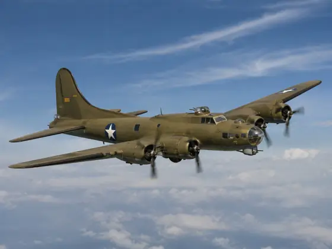

B-17 operations · 1941–1945
The B-17 Flying Fortress is one of the defining aircraft of the air war over Europe. It flew daylight strategic bombing missions against industrial targets, airfields, transport networks and oil facilities, most famously with the Eighth Air Force from England and the Fifteenth Air Force from Italy. A good B-17 build starts with the exact aircraft: early B-17E, B-17F, chin-turret B-17G, famous nose-art subject, natural metal late-war machine, or battered Olive Drab veteran.

Role & strengths
- USAAF daylight strategic heavy bomber
- Eighth Air Force, Fifteenth Air Force, pathfinder, rescue and famous nose-art routes
- Four engines, multiple turrets, crew stations, bomb bay and large greenhouse nose
- Olive Drab/Neutral Grey, natural metal, group tail markings and squadron codes
- R-1820 exhaust, oil streaking, flak patches, faded OD, chipped walkways and operational grime
Key theatres
- England / Eighth Air Force strategic bombing
- Italy / Fifteenth Air Force route
- Schweinfurt, Regensburg, Berlin and oil campaign routes
- Famous subjects such as Memphis Belle, Sally B and restored survivors
Specification B-17G
Survivors today

Surviving B-17s are useful for cockpit glazing, nose, turrets, bomb bay, undercarriage, engine nacelles and weathering reference, but restored markings need aircraft/date checks.
View survivorsTimeline highlights
Build this B-17 as…
Pick the aircraft and Bomb Group first. A B-17F Memphis Belle route, B-17G late-war natural metal machine, Fifteenth Air Force aircraft, pathfinder or restored survivor all need different details.
Aircraft identity
B-17E, F and G aircraft differ. Check chin turret, waist windows, cheek guns, tail turret, nose glazing and block details before committing.
B-17 markings are aircraft-specific. Nose art, squadron code, serial, group tail marking and date must match.
Paint scheme cards
Classic B-17F/G route with faded OD, flak patches, exhaust and mission wear.
Late-war route with panel tone variation, anti-glare panels and colourful group markings.
Memphis Belle/Sally B-style subjects need precise serial, codes and weathering control.
Weather engines, wing roots, patched panels and underside grime logically by airflow.
Campaign cards
England-based daylight bombing route with group tail markings and mission-worn aircraft.
Memphis Belle, Sally B and named aircraft route with exact nose art and codes.
Italy/Mediterranean route with sun, dust and different group markings.
B-17G route with metal finish, colourful markings and exhaust/oil staining.
Build difficulty and related guides
Very high. Size, four engines, turrets, clear parts and markings need serious planning.
Very high. Nose, cockpit, turrets and waist windows need careful masking.
High. OD fade, natural metal, flak patches and exhaust need restraint and references.
B-17 Bomb Groups and Flying Fortress units
Sortable B-17 unit cards covering 8th Air Force, 15th Air Force, famous Fortresses, pathfinder/rescue and survivor/reference routes.
B-17 operating map
Airfield info
Click a marker to show linked B-17 unit cards and modelling notes.
Campaign timeline
Survivors
Books and reference sources
B-17 build guide
B-17 videos, photos and archive material
Media replaces the old separate walkaround tab: cockpit, exhaust, undercarriage, markings, survivor references, archive imagery and video cards are grouped here.